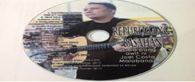

FILDIS-FILIPINO SA IBAT-IBANG DISIPLINA
MIDTERM
WEEK 7: FILIPINO SA HUMANIDADES
1.1 Maunawaan ang mga liriko ni Garry Granada
Sa usapin ng sining ay nakaagapay ang wikang Filpino, Damang-dama ng mga mamayang
Pilipino ang mga awiting pinoy na tumatatak hindi lamang sa isipan bagkos maging sa puso ng mga Pilipino.
Isa ang awiting “Anak” ni Freddie Aguilar na sumikat hindi lamang sa Pilipinas kundi pati sa ibang bansa, nag karoon pa ito ng mga salin sa iba’t ibang wika sa mundo
Dahil sa pagkahilig ng mga Pilipino sa pag-awit nagiging mabisang instrumento ito sa paghahatid ng mensahe sa madla. Ginising ng awiting “MAGKAISA” noong 1986 matapos ang mapayapang rebolusyon ng mga Pilipino laban sa pagpapatalsik sa sinasabi noong diktaduryang Pangulong Ferdinand Marcos.
Isa si Gary Granada sa mga mahuhusay na kompositor at mang-aawit sa Pilipinas
Nakalikha siya ng mga awiting kumukorot sa puso at isip ng mga mamayang Pilipino, Dahil sa mga awitin na isinulat ni Gary Granada nakagawa si Dr. Joel Malabanan ng Unibersidad ng Pilipinas nang isang pananliksik tungkol sa awitin ni Gary Granada

4.2 Malaman ang halaga ng paggamit ng kanta sa pakikibaka ANG MGA LIRIKO NI GARY GRANADA BILANG REPLEKSYON NG PULITIKA, NASYONALISMO AT KALAGAYAN NG BANSA
(Bahagi ng pananaliksik ni Joel Costa Malabanan)
Binary contrast o dalawahang pagtutunggali ang ipinapakita ng liriko sa awiting “Bahay” at “Manggagawa” sa pagitan ng mga mahihirap at mayayaman. Sa awiting “Bahay” ay pinagkumpara ni Gary Granada ang labinlimang mag-anak na nagsisiksikan sa isang barung-barong na sira-sira at sa isang mansyon na halos walang nakatira. Binigyang diin niya sa awit na kahit ang Maylikha ay posibleng magtaka kapag nakita ang tirahan ng mga mahihirap nating kababayan na inilarawan bilang “pinagtagpi-tagpi”
Notes: (Binary contrast -Meaning from seeing themes or elements as connotative categories of opposites. An analysis of thematic opposites in a text or artifact studies the patterns other than sequential ones in the story. Find one element, consider its symbolic theme and then look for its opposite)
Sa awiting “Manggagawa” naman ay binigyang diin ang pagiging manhid ng mga kapitalista sa karaingan ng mga manggagawa lalo pa sa usapin ng pagtataas ng kanilangsuweldo. Matindi ang sumbat ng huling saknong ng awit tagping basurang pinatungan ng bato / hindi ko maintindihan bakit ang tawag sa ganito ay bahay? Samantalang may isang panginoong may kapital/ ang nagdiwang at nagdaos ng hapunan at kabilang sa hapag ng panauhing pandangal / ang tanyag at ang banal sa ating lipunan/ halos ang bawat isa’y makapangyariha’t matagumpay/ dahilan sa isang taglay na katangian / ang matibay na loob na magsawang mabusog / habang may nangangatog sa hapdi ng tiyan.” Ganitong-ganito ang kalagayan sa pagitan ng mga manggagawang kontraktuwal sa ating lipunan at sa mga kapitalistang nagkakamal ng yaman mula sa lakas-paggawa ng manggagawa Kung mas marami sana ang gagamit ng kantang “Bahay” at “Manggagawa” sa mga guro ng paaralan ay mas mailalapit nila ang reyalidad sa kanilang mga estudyanteng ipinaghehele ng eskapismo mula sa pinagkakaabalahan nilang social network.
4.3 Maunawaan ang usapin sa Lipunan
Ang awiting “Dam” naman ay naglalaman ng protesta sa mga development projects ng gobyerno na nagwawasak sa kapaligiran at sa pamumuhay ng mga
katutubo. Sa ngalan ng huwad na kaunlaran / Ang bayan ay sa utang nadiin / At ito na ang kabayaran /Ang kanunununuang lupain / Ang mga eksperto'y nagsasaya / At nagpupuri at sumasamba / Sa wangis ng diyus-diyosan nila / Ang dambuhalang dam. Taong 1989 nalikha ang awit na halaw sa pakikipaglaban ng mga katutubo sa Cordillera na tumutol sa pagtatayo ng Chico Dam. Noong Abril 24, 1980 ay nagbuwis ng buhay si Macliing Dulag, isang lider ng mga katutubong Kalinga na pinaslang ng mga militar dahil sa pagtutol nito sa Chico Dam na wawasak sa kalikasan at sa kanilang pamumuhay. Napigil ang pagtatayo ng dam at ang kamatayan ni Macliing Dulag ay naging simbolismo ng kabayanihan at ngayon ay ipinagdiriwang bilang “Araw ng Cordillera”. Ang kantang “Dam” ni Gary Granada ay hindi lamang awit na nagpapakita ng pagmamahal sa bayan kundi awit rin na nagpapakita ng pagmamahal sa kalikasan. Hanggang ngayon, ang mensahe ng awit ay patuloy pa ring nanunumbat habang walang pakundangan rin ang pagwasak sa kapaligiran kapalit ng kaunlaran. Maiuugnay naman sa kalagayan ng mga manggagawa ang nilalaman ng kantang “Hatinggabi Sa Picket line” na literal na tumatalakay sa mga manggagawang nagwewelga.Nagpapakita ng realismo ang refrain ng awit na may linyang “Hangga’t manggagawa’y nakagapos / ang welga’y hindi matatapos/ hangga’t naghahari ang pera’t baril / ng mga uring naniniil” at nagpaaalala sa pinaslang na labor leader ng Nestle na si Diosdado Fortuna noong Setyembre 22, 2005 at sa pakikibaka ng mga manggagawa ng Philippine Airlines noong Setyembre 30, 2011 Ang mga ganitong tema ng awit ay mainam na gamitin upang mamulat ang mga estudyante hinggil sa kalagayan ng mga manggagawa sa Pilipinas at hindi nalalayo sa mga akdang pampanitikan na matatagpuan sa mga panghayskul na aklat sa Filipino tulad ng kuwentong “Aklasan” ni Brigido Batungbakal, “Ang Dyanitor” ni Aurelia Vicente at “Gutom” ni Clodualdo del Mundo. Ang mga kuwentong ito, tulad ng mga awit ni Gary Granada ay repleksyong ng kalagayan ng mga mahihirap nating kababayan sa lipunan na dapat magkaroon ng puwang sa mga talakayan sa klase sa hayskul man o sa kolehiyo.
Ang mga awiting “EDSA” at “Kanser” ay kapwa inilabas ni Gary Granada noong 1989 at kasama sa album na “Ugat: Pagsamba at Pakikibaka Vol. 2” na isa sa pinakamatapang na album na kanyang inilabas. Ang liriko ng “EDSA” ay pagtuligsa sa kawalan ng pagbabago pagkatapos na mapatalsik si Marcos at mailuklok sa puwesto si Pangulong Cory Aquino. Ayon sa awit, “Ang EDSA’y tulad ng paglaya natin sa mga Kastila/ sa halagang dalawampung milyong dolyar/ sa anyo ng demokrasya ay angkop at kasyang-kasya/ ang base militar at sandatang nukleyar.” Malinaw na ginamit ni Gary Granada ang kasaysayan para maikumpara sa Treaty of Paris noong 1898 ang EDSA Revolution noong 1986 na ayon sa awit ay simbolismo ng huwad na kalayaan. Sa panitikan, ganito rin ang tema ng kuwentong “Ugat” ni Genoveva Edroza Matute kung saan ang pangunahing karakter na si Lolo Tasio ay nais nang umalis ng Pilipinas nang mapagtanto niya na wala namang naganap na pagbabago sa kalagayan ng bansa pagkatapos ng EDSA Revolution. Samantala, ang kantang “Kanser” naman ay tumatalakay sa sakit ng lipunan partikular sa pagsasamantala ng mga mayayaman sa mahihirap na ang salosyon ay “totoong rebolusyon”.
Lumilitaw na ang awit ay bahagi rin ng pagtuligsa sa huwad na kalayaang natamo ng sambayanan matapos na mapatalsik ang diktaturya ni Marcos. Ang awiting “Pablong Propitaryo” ay sinulat ng Palanca awardee na si Tom Agulto ngunit nilapatan ng musika at inawit ni Gary Granada. Tinalakay sa awit ang abusadong panginoong maylupa, pulitiko at propitaryo na si Pablo. Kagaya sa Kabanata IV ng “El Filibusterismo” kung saan pinaslang ang paring si Padre Clemente na kumamkam ng lupa ni Kabesang Tales, binaril rin at napatay ang mapagsamantalang si Pablong Propitaryo: “Tingga ay naglagos sa dibdib, sa utak/ sinong walang puso kaya ang umutas?” Ang ganitong eksena ay nagtataglay ng element ng Marxismo kung saan ang dahas ang tanging solusyon upang wakasan ang pagsasamantala.Ganito ring solusyon ang ginamit ni Efren Abueg sa kanyang kuwentong “Ang Kamatayan ni Tiyo Samuel” kung saan ang balisong ni Felipe ang kumitil sa mapagsamantalang si Tiyo Samuel. Sa konteksto ng lipunang Pilipino, nananatiling pinakamatandang kilusan sa Asya ang armadong pakikibaka ng New People’s Army sapagkat tanging dahas lang ang pinaniniwalaang nalalabing paraan sa mga magsasaka at mahihirap nating kababayan na kasapi nito. Ilan lamang yan sa mga bahagi ng Pananaliksik na ginawa ni Dr. Joel Malaban, Pinapakita sa kanyang pananaliksik kung gaano kalakas ang kapangyarihan ng isang awitin at kung ano ang nagiging dulot nito sa mga nakikinig.
Ang musika ay nakakabit na sa kultura at pamumuhay ng mga Pilipino, nagiging susi rin ito sa pag-unlad ng kanilang kaisipan at pakikibaka sa buhay.
Isa lamang si Gary Granada sa maraming mkopositor ng Pilipinas. Na maraming gustong sabihin sa bayan sa pamamagitan ng musika.
WEEK 8: FILIPINO SA USAPING AGRARYO
4.1 Maunawaan ang kalagayan ng Agraryo sa Pilipinas
FILIPINO SA USAPING AGRARYO
Hindi magpapahuli ang isyung pang-agraryo sa paggamit ng wikang Filipino sapagkat ang masang maralita at mga magsasaka ay pawang sa wikang ito nakapaghahayag ng saloobin
Ipinaskil ng ANAKPAWIS INFO noong Disyembre 14, 2015 ang kanilang pahayag sa isyung Agraryo, naging paraan ito upang maipahayag ang isyu sa wikang Filipino ng maipabatid sa mamamayang Pilipino.
Pahayag ni Anakpawis Representatuve Fernando “ka Pando” Hicap sa Asembliya ng Farmers Development Center (FARDEC) Central Visaya Cebu City, Disyembre 11, 2015
Maiksing Kalagayang Magbubukid ng Pilipinas
Ang lipunang Pilipino ay nanatling agraryo at agrikultural sa ilang dekada. Sa ilang dekada ng pagpapatupad ng mga pumuposturang development plan ng mga nakaraan at kasalukuyang rehimen. Ang Medium-Term Philippine Development Plan (MTPDP) o mas kilala ngayon sa tawag na Philippine Development plan (PDP) ay wala itong ilusyong lumikha ng tunay na pag-unlad na nakabatay sa Pambansang Industriyalisasyon.
Samakatuwid nanatiling atrasado ang pwersa sa produksyon sa bansa at pinalala lamang ang umiiral na relasyon sa produksyon, partikular sa kanayunan tunay na pag-unlad ng nakabatay sa pambansang industriyalisasyon. Ang lokal na pyudalismo ay tinutungtungan ng monopolyong kapitalismo o imperyalismo
Mayorya 75% ng populasyon ay magsasaka o mula sa kanayunan, itinatago ito ng estado upang lumikha ng ilusyong pag-unlad o progreso.
Noong 2013 ayon sa gobyerno ( sa datos na isinumite nito sa Wold bank) aabot ng 12.4 milyonng ektarya ang lupaing agrikultural o halos 42% ng kabuoang kaluoaan ng bansa at 5.6 milyong ektarya nito ay arable 7.3 milyong ektarya ay sakahan ng cereal tulad ng palay. GDP sa Agriculture Hunting Forestry and Fishing Ngunit 11% lamang ito ng kabuuan, halos 19 bilyong metrik toneladang produksyong palay ay nagkakahaaga ng P378 bilyon. Halos P20 kada kilo.Ang palay na ito ay lumikha ng 12.3 bilyong metriko toneladang bigas.
4.2 Malaman ang kalagayan ng mga magsasaka sa bansa
Kawalang Lupa
Sa malawak na kanayunan ng bansa ang mga magsasaka ay walang lupa, Ang bangkaroteng CARP (Comprehensive Agrarian Reform Program) na nag-expire noong Hunyo 30, 2014 ya napatunayang peke at walang silbi. Noong I-extend ito noong 2009 bilang CARP Extention with Reforms (CARPER), umabot sa 1.6 milyong ektarya umano ang balanse nito para sa 1.2 milyong farmer-beneficiaries (FB) noong 2011 ay halos 1.5 milyong ektarya para sa 976,000 FB. Kung susuriin ang sukat ng sakahan sa pagpapatupad ng CARPER ay kakarampot na average na 1.2 ektarya kad FB
Upa sa Lupa
Bunga ng malawak na kawalang lupa, ang mga magsasaka ay nakatanikala sa pagbabayad ng upa sa lupa upang makapag saka, Umaabot sa 13 kaban sa kada 100 kabang inaning palay ang upa sa lupa. P10,000 sa tatlo hanggang apat na buwan na pagsasaka sa palay na lilikha ng halos P75,000 na halaga ng ani kaya halos pumapalo ng 87% ang upa sa lupa, napipilitan ang mga magsasakang magpasailalim rito upang hindi lamang paalisin sa lupa
Mababang sahod at iba pang pagsasamantala
Nanatiling mababa ang sahod ng mga manggagawang bukid, karaniwang ay umaabot ito sa P150, P200, P250. Ayon sa gobyerno ang manggagawang bukid daw sa palayan ay kumikita ng P256 habang sa maisan ay P206, Gayunpaman kahit umabot pa ito ng P300 kulang na kulang pa rin ito na panggastos sa isang araw. Bunga na rin ng kawalang lupa at monopolyo ng mga panginoong may lupa sa merkado, karaniwang nakaasa sa utang ang mga magsasaka kung saan sa maraming lugar ang P1000 na utang ay may interes na isang kaban ng palay na may halagang P700-P800 halos umaabot ng 70%-80% ang tubi nito sa loob ng tatlo hanggang apat na buwan
Plantasyon: Imimperyalistang pandarambong sa agrikultura
Mula sa kolonyalismong Kastila, ang agrikultura ng Pilipinas ay nagsilbing taga supay lamang ng dikta ng dayuhang kapangyarihan. Ang sisitemang hacienda ang ugat ng kung bakit sampu-sampung ektaryang lupa ay tinatamnan lamang ng iisang uri ng produksyin. Sa gitnang Luzon, Negros, kopra sa Wuezon, bikol at Easter Visayas ay Tubo ang nakatanim. Sa ilalim ng dektaduryang Marcos tumodo ang pagpasok ng monopolyo kapitalista tulad ng Dole at Del monte, Kung saan libo-libong ektarya ang sinaklaw nito sa Mindanao.
Malawakang atake sa Lumad para sa imperyalistang pandarambong sa likas yaman
Ang atake sa Lumad ay pangunahing bunsod ng pang-aagaw sa kanilang lupang ninuno, pagwasak sa kanilang komunidad para angkinin ng monopolyo kapitalista ang likas na yaman dito Sa ilalim ng ng Mining Act of 1995 ang saklaw ng Mineral Production Sharing Agreement (MPSA) ay umabot na ng 58400 ektarya na may 338 na contractor. Sa kasalukuyan umaabot ng 500,000 ektarya ang sinasaklaw ng mga mining operation sa Mindanao at 80% nito ay mga lupang ninuno at kumunidad ng mga lumad. Aabot sa 15 malalaking dayuhang mining corporation na pag-aari ng Amerikano, Hapon, Canda, Britanya, Australia, China, UAE, Switzerland at iba pa ay sumisira sa mahigit 130,000 ektarya sa Minadnao
4.3 Maunawaan ang Importansiya ang Lupa sa Bansa
Papaigting na pagsusulong ng Tunay na Reporma sa Lupa
Sa harap ng matinding atake sa kilusang magbubukid sa bansa, hindi sinusuko ng masang magsasaka ang karapatan sa lupa.Bagkus papaigtingin ang pagsusulong ng tunay na Reporma sa Lupa at pagtatanggol sa lupa. Ang Kilusang magbubukid ng Pilipinas (KMP) na may epetibong pamumuno sa 2 milyong magsasakang Pilipino ay masugid na inaabante ang pagsusulong ng Tunay na Reporma sa Lupa. Mahalaga ang pagtatambol ng isyung magbubukid dahil marami na tayong karanasan na sa patuloy nating mga kampanyang masa nahihimok na sumama sa mga magsasaka gaya ng mga kampuhang magbubukid sa mga tanggapan ng DAR at iba pang ahensya.Nagpapakita na ang patuloy na pakikibaka ng mga samahang magsasaka ng bayan, ang nagbibigay ng buhay sa iba pang manggagawang Pilpino, ang pakikibaka sa reporma sa lupa ay hindi lamang laban ng mga magsasaka kundi ay laban din ng buong bansa. Sa akatuwid kung magkakaroon ang mga magsasaka ng kanilang sariling lupang masaskahan at hindi na aasa sa pangigipit ng mga panginoong may lupa, ay maaring malaki ang maging ginhawa ng produkyon pang agrikultura ng bansa. Maaring ito ang maging sagot sa kakulangan ng makakain ng masang Pilipino sa kanilang hapag kainan
WEEK 9: FILIPINO SA SERBISYONG PANLIPUNAN
4.1 Maunawaan ang halaga ng paggamit ng wikang Filipino sa iba pang larang
FILIPINO SA SERBISYONG PANLIPUNAN
Naturingang may sariling wika ang Pilipinas na ipinagmamalaki at ibinabandila tuwing buwan ng Agosto, Ang Wikang Filipino. Nakakatawang isipin, sa pagbibiyahe patungong ibang bansa wala namang masama sa mga tinuring sa itaas, ngunit sana man lamang ay madama ng mga taga ibang bayan ang pagpapahalaga ng mga Pilipino sa sariling wika.
Si Ranee Rose A. Garatol ay gumawa ng pag-aaral hinggil dito, kaniyang isinagawa ang Mungkahing Salin sa mga Paalala, Alituntunin, Panuto, at Direksyon sa mga Piling Pampublikong Ospital
4.2 Malingan sa paggamit ng Filipino sa iba’t ibang serbisyo
FILIPINO SA EDUKASYON
Si Hermeline Aguilar ay nagsasagawa ng pag-aaral hinggil sa Kabisaan ng Wikang Filipino at Alternatibong Sistema ng Pagkatuto (ALS) sa Pagtuturo ng mga Piling Learning Center sa Pambansang Punong Rehiyon ng Pilipinas. Narito ang isinagawa niyang pananaliksik
Abstrak
Isinakatuparan noong 2003 ang programang Alternatibong Sistema ng Pagkatuto (ALS) ng Kagawaran ng Edukasyon (DepEd) bilang tugon sa Millennium Development Goals ng Pilipinas na Education For All (EFA) sa taong 2015 Naging malaki ang gampanin ng Wikang Filipino bilang midyum ng pagtuturo at pagkatuto. Isa ito sa mga dahilan kaya’t sinikapng mananaliksik na alamin ang Persepsiyon sa Kabisaan ng Wikang Filipino at Alternatibong Sistema ng Pagkatuto (ALS) sa Pagtuturo sa mga piling learning center sa Pambansang Punong Rehiyon ng Pilipinas.
Paraan sa Pagtukoy sa Kabisaan ng Wikang Filipino at Alternatibong Sistema ng Pagkatuto (ALS) sa Pagtuturo sa mga Piling Learning Center
Ang Bisa ng Filipino Bilang Midyum ng Pagkatuto
Mabisang mabisa ang Wikang Filipino bilang midyum sa pagkatuto ng mga mag-aaral ng ALS ay sa Limang Hibla ng Pagkatuto, samakatuwid: Mabisang mabisang midyum ang Wikang Filipino upang maging kasiya-siya ang pag-aaral; upang mailapat ang kaugnayan sa buhay ng mga aralin
Kongklusyon
Naging mabisang mabisa ang paggamit ng Wikang Filipino sa pagkatuto ng mga mag-aaral samantalang pinakamabisa naman ito sa pagtuturo sa Alternatibong Sistema ng Pagkatuto (ALS).
FILIPINO SA NEGOSYO
Gaano ba kaepektibo kung gamit ang sariling wika sa pagnenegosyo? Karaniwan nang nagging isyu ito sa larang ng pangangalakal o negosyo. Ang paggamit sa wikang Filipino ay higit na nakaiimpluwensiya sa mga taong nakakarinig sa isang programa. Isang patunay na rin ang iba’t ibang anunsyo na mula sa ibang bansa na nilalapatan ng wikang Filipino upang higit nating maunawaan at makahikayat nito ang mga mamimili.
WEEK 10: WIKANG FILIPINO SA AKAWNTING FILIPINO SA LITERATURA FILIPINO SA INHINYERANG SIBIL FILIPINO SA MEDISINA
4.1 Maunawaan ang halaga ng paggamit ng wikang Filipino sa iba pang larang
WIKANG FILIPINO SA AKAWNTING
Ang posibilidad ng Paggamit ng Librong Nakasulat sa Wikang Filipino sa Pagtuturo ng Accounting Ni Patrick M. Malabo.
Nakasaad sa ginawang Pananliksik ni Patrick M. Malabo na maaring gamiting ang wikang Filipino sa mundo ng Akawting. Narito ang ilang bahagi ng kanyang pananaliksik
Abstrak
Isa sa mabigat na problema ng mga estudyante sa Accounting ay ang hirap ng pag-unawa sa kanilang aralin. Malaking hadlang din sa lubos nilang pagkatuto ay ang libro nilang ginagamit na nakasulat sa wikang Ingles. Bagamat alam nila itong basahin, hindi maikakaila na hirap nila itong unawain sapagkat hindi naman ito ang nakalakihan nilang wika.
Wika, Pagbabasa at Accounting
Luhang mahalaga sa mga mag-aaral na ito ang pagbabasa.Ang pagbabasa ay isang malawak na proseso na may kinalaman sa pagkilala pagpapahalaga at pag-unawa sa mga salita. Nagibibigay-katuturan din ito sa kahulugan at diwa ng isang limbag na kaisipan (Carpio et. al., 2012)
Sabi nga ni J.V Stalin (salin ni Mario Miclat 1995), “Isang midyum at isang instrument ang wika na nakatutulong sa kumonikasyon, pagpapalitan ng kaisipan, at ang pag-uunawaan ng tao. Dahil tuwirang nakaugnay ito sa pag-iisip, salita, at sa mga salitang pinagsama-sama sa pangungusap at ang mga tagumpay sa kognisyon ng tao, at sa gayon ay nagiging possible ang pagpapalitang ng ideya sa lipunan ng tao” Sa talumpati naman na ibinigay ng isang pinipitagang edukador at tagapagtanggol ng wikang pambansa na si Dr.Amalia Cullarin Rosales na PInamagatang “Ang Wikang Filipino sa Akademya”.
Nag bigay siya ng mga katanungan sa paggamit ng Wikang Filipino sa Akademya at binigyang-liwanag ang bawat isa sa mga tanong na ito.
Mas epektibo ba ang paggamit ng Wikang Filipino kaysa sa Wikang Ingles? at Ano ba ang pananaw ng mga mag-aaral hinggil sa paggamit ng Wikang Filipino bilang panturo?
Konklusyon
Sa kabuuan, mailalahad natin na mainam ang paggamit ng librong nakalimbag sa wikang Filipino sa pagtuturo ng accounting.
FILIPINO SA LITERATURA
Mahalaga ang papel ng Wikang Filipino sa pagsusulat ng literatura sa Pilipinas, Mas mailalapit ng wikang Filipino ang damdamin, kaisipan at kahulugan ng bawat maisusulat sa mga mambabasang Pilipino.
Narito ang ilang bahagi ng ginawang sulatin ni Perla S. Carpio na may pamgat na Panimulangpag sipat sa kulturang popular
PANIMULANG PAG SIPAT SA KULTURANG POPULAR Ni Perla S. Carpio
Salamin ng tao ang kanyang kultura. Palasak itong pahayag sa mga aklat panghumanidades. Sa kulturang kanyang taglay ay hinuhugisan ang kaniyang pagkatao. Ang kanyang pananamit, paraan ng pananalita at pagkilos, pagtanggap at pagbibibigay-interpretasyon at solusyon sa mga suliraningkinahaharap at kinahihiligang paksain ng usapan.
PANG MASA ang kulturang popular
Laging may paghihiwalay sa estadong ekonomiko ang tao. Sa lipunan, laging may elitist at mahirap; Ang class A, at B, ay ikinukunsiderang mga “rich”, samantalang ang mga nasa class C, D at E ay ang masa. Ang masa ang palagiang higit na marami , higit na malaki, at higit na sentro ng komeryalisasyon. Sila ang madaling kausapin, madaling kumbinsihin, madaling patawanin, paiyakin at busugin. Kapag masa ang tumangkilik ng moda ng kasuotan, ito nag magiging uso.
ORDINARYO ang kulturang popular
Nasa pagiging pangkaraniwan ng mga paksang talakay at paglalarawan ang kalakasan ng kulturang popular.Saklaw nito ang lahat ng paksa nang walang pagtatanggi o pagtatangi.
PINAGKAKAKITAAN ang kulturang popular
Hindi maihihiwalay ang konsepto ng komersyalisasyon sa kulturang popular. Sumulpot ang kulturang popular sa tagumpay nitong kabakahin ang tugtugin ng komersyo at komonalidad
USO ang kulturang popular
Sabin i Allauahbah (1939): “The wisdom of the past is of value, when it merges with the present. Adherence to the past can cause death to progress and misery to living.” Dapat maging “in” upang maipagpatuloy ang progreso o pag-unlad.
LIKAS ang pag-usbong ng kulturang popular
Idinikta ng panahon at pagkakataon ang pag-usbong ng kulturang popular. Minamadali natin ang panahon sa kasalukuyan. Kung noon ay nag mamadali ang panahon, ngayon at minamadali na din ito.
ABOT-KAYA ang kulturang popular
Ito marahil ang isa sa mga pangunahing dahilan kung bakit nagpapatuloy at nagtatagal ang Jolibee at Mc Donalds, mas higit na marami ang bumibili ng tabloid kaysa broadsheet
RELASYON ang puno’t dulong layunin ng kulturang popular
Ugnayan Ito ng pinatatatag ng kulturang popular Likas sa tao na ariin siyang may ugnayan o relasyon sa kaniyang kapwa.
4.2 Malinang sa paggamit ng Filipino sa iba’t ibang serbisyo
FILIPINO SA INHINYERYANG SIBIL
Paggamit ng Wikang Filipino sa Inhinyeryang sibil
PANUKALANG PROYEKTO (INHINYERYANG SIBIL)
PAMAGAT: PAGPAPAGAWA NG PEDESTRIYANG TULAY SA CASILI, RIZAL
PROPONENT NG PROYEKTO
Foundation of Outstanding Mapuans Inc. (FOMI) at ang National Association of Mapua Alumni ng Mapua Rasyonal
Ang panukalang proyekto ay bunga nang mapanood sa TV news ang pagtawid ng mga mag-aaral sa ilog ng Casili gamit ang balsa at salbabidang goma papunta sa Casili Elementary School.
FILIPINO SA INHINYERYANG SIBIL
DESKRIPSYON NG PROYEKTO
Ang Pedestriyang Tulay ng Casili ay isang suspensyong tulay na may kabuuang ispan na 105.5 metro (25m+62m+18m) at isang 1.0 metro. Ang Proyekto ay may pangunahing layunin na matulungan ang komonidad ng Casili sa Rizal upang patuloy na makapag-aral nang hindi na kailangan pang gumamit ng balsa o salbabida para lamang makatawid sa ilog. Ang inaasahang panahon na magugugol sa proyekto ay 10 buwan mula sa groundbreaking nito hanggang sa pagtatapos at maaari nang magamit ng komonidad.
FILIPINO SA MEDISINA O AGHAM
Paggamit ng wikang Filipino sa Medisina o Agham bilang pagbibigay ng anunsyo,
Ang Influenza A (H1N1) ay isang bagong uri ng vayrus na nagdudulot ng sakit sa tao. Ang paraan ng pagkalat ng vayrus na ito ay maihahalintulad sa kung papaanong kumakalat ang iba pang influenza vayrus.
Paraan ng Pagsasalin
Mga Palatandaan o sintomas ng Pagkakaroon ng Influenza A (H1N1)
Gaya ng sintomas kapag may karaniwang trangkasao tulad ng:
Paano makaiiwas sa Pagkakaroon ng Influenza A (H1N1)
WEEK 11: MGA BATAYANG KASANAYAN SA PANANALIKSIK
MGA BATAYANG KASANAYAN SA PANANALIKSIK
Kasanayan sa Pagsasalin
Dahil sa karamihan ng mga dokumento at siyentipikong pag-aaral ay naggaling sa mga mauunlad na bansa, isa samga nagiging kahingian ay ang pagsasalin ng mga ito sa Filipino nang sa gayon ay maging bahagi ito ng pagpapalakaw ng saliksik sa bansang Pilipinas. Nilagom ni Karen San Diego (2014) sa kaniyang isinasagawang pag-aaral hinggil sa pagsasalin wika na hinggil sa labing-walaong (18) paraan ng pagsasalin ni Peter Newman (1988) mula sa aklat na A textbook of Transnlation
Narito ang labing-walang (18) paraan ng pagsaslain ayon sa libro ni Peter Newman (1988).
4.2 Matukoy ang mga mapagkakatiwalaan, makabuluhan at kapakipakinabang nasanggunian sa pananaliksik
Kasanayan sa Paglalagom at Pagpaparapreys
Paglalagom ang tawag kapag inilahad nang payak ang orihinal na materyales na nabasa sa paglalagom alalahaning huwag muling isulat ang orihinal na akda, Kailangang mapanatili maiksi ito at gumamit lamang ng sariling pananalita
Kasanayan sa Pagpili ng Paksa ng Pananaliksik
Pinakamahirap na suliranin ng isang mananliksik ang pagpili at paghanap ng paksa ng pag-aaral. Hindi madaling pumili ng paksa ng isasagawang pananaliksik
Mga Maaaring Paghanguan ng Suliranin
Sarili – nag mayamang karanasan ng tao ay isa nang sapat na hanguan ng maaaring piliing suliranin o paksa
Pang-araw-araw na Babasahin - Mula sa dyaryo, magasin at iba pang pang-araw-araw na babasahin ay makahahango ng mga suliranin malaki ang maitutulong ng paghagilap sa mga napapanahong isyu o balita sa iba’t ibang sektor ng lipunan
Brodkast Midya - Malaki ang maitutulong sa paggalugad ng suliranin ang pakikinig at panonood ng mga balita at mga programa sa radyo at sa telebisyon na tumatalakay sa mga mahahalaga t napapanahong isyu ng lipunan
Mapagkakatiwalaang Tao - Maraming ideya ang maaaring makuha mula sa pagtatanong sa mga taong mapagkakatiwalaan lalo’t higit sa larangang kanilang kinabibilangan.
Mga Maaaring Paghanguan ng Suliranin
Internet- Hindi na maiaalis sa bawat mag-aaral ang mabilisang pagpindot sa mga search engine gaya ng google at yahoo.com kapag may ninanais na hanapin o masagot na paksa
Laybrari- Hindi maitatanggi na ang pinakamadali at pinakamaraming datos na maaaring pagbatayan ng paggawa ng isang pananaliksik ay ang Laybrari.
Mga Dapat isaalang-Alang sa Pagpili ng Paksa
Mga Dapat Isaalang-Alang sa Pagsasaayos ng Paksa
Kailangang maisaayos ang suliranin sang-ayon sa kasaklawan at kahangganan nito. Maaaring mabigyang hangganan o limitasyon ang pananaliksik ayon sa sumusunod.
4.3 Maisapraktika at mapaunlad pa ang mga batayang kaalaman sa pananaliksik
Karaniwang Format ng Kwantitatibong Pananaliksik sa mga Pamantasan
Narito ang mga balangkas na nilalaman ng Kwantitatibong Pananaliksik
KABANATA 1
KABANATA 2 Mga Kaugnay na Literatura at Pag-aaral
KABANATA 3 Disenyo at Paraan ng Pananaliksik
KABANATA 4 Paglalahad, Pagsusuri at Interpretasyon ng mga Datos
KABANATA 5 Lagom ng mga Natuklasan, Konklusyon at Rekomendasyon